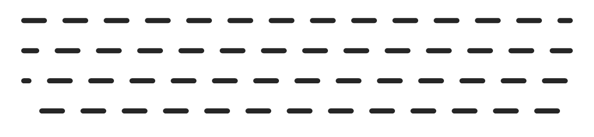
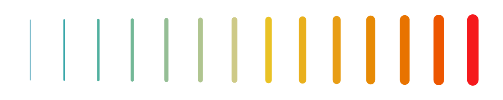

This article covers the two pieces you spend most of your time with in vellum: the scene graph (units, viewports, and the tree they form) and the paint model (gradients, patterns, and masks) shared across every backend.
The scene graph
A vellum scene is a tree. The root is the page created by
vl_scene(); every push() adds a
vl_viewport() child and descends into it; every
draw() appends a grob at the current level;
pop() climbs back up. The tree is an immutable value that
outlives its construction, which is what enables the queries in
vignette("retained-mode").
Because it is a tree, viewports nest, and a child’s geometry is expressed relative to its parent. That is the whole mechanism behind panels, insets, and faceting: push a viewport for a sub-region, draw inside it in local coordinates, then pop.
vl_scene(6, 2.4, bg = "white") |>
# a full-width band
draw(rect_grob(height = 0.6, gp = vl_gpar(fill = "#eef2f6", col = NA))) |>
# an inset viewport occupying the middle third
push(vl_viewport(x = 0.5, width = 1 / 3, height = 0.8)) |>
draw(rect_grob(gp = vl_gpar(fill = "#3a7bd5", col = NA))) |>
draw(text_grob("inset", gp = vl_gpar(col = "white", fontface = "bold"))) |>
pop()
Units
Coordinates and sizes are vl_unit() vectors: a value
paired with a unit name. Each element carries its own unit, so one
vector can mix coordinate systems, and a grob can even use different
units on its x and y axes.
The units you reach for most:
-
"npc"(the default): normalised parent coordinates,0at bottom/left and1at top/right of the current viewport. -
"native": the enclosing viewport’sxscale/yscale, so data values map directly. This is what you use for plotted data. -
"mm","cm","in","pt": absolute physical lengths that keep their size regardless of the viewport.
A bare number is interpreted in the grob’s default units (usually
"npc"), so x = 0.5 and
x = vl_unit(0.5, "npc") are the same thing.
vl_unit(1:3, "native")
#> <vellum_unit[3]>
#> [1] 1native 2native 3native
vl_unit(c(0.5, 1), c("npc", "in"))
#> <vellum_unit[2]>
#> [1] 0.5npc 1.0in"native" units need a viewport with scales to resolve
against. Set xscale and yscale when you
push:
vl_scene(5, 3, bg = "white") |>
push(vl_viewport(
width = 0.86, height = 0.82,
xscale = c(0, 10), yscale = c(-5, 25)
)) |>
draw(rect_grob(gp = vl_gpar(fill = "grey97", col = "grey70"))) |>
draw(lines_grob(
x = vl_unit(0:10, "native"),
y = vl_unit((0:10) * 2, "native"),
gp = vl_gpar(col = "steelblue", lwd = 2)
)) |>
pop()
Font- and string-relative units ("char",
"line", "strwidth", "grobwidth")
resolve to millimetres at construction, because vellum can measure text
without a device. Arithmetic reduces as far as it can: same-unit sums
combine, two absolute units become millimetres, and a position base plus
an absolute becomes a compound unit that keeps the base and
carries the offset in mm
(vl_unit(1, "npc") - vl_unit(2, "mm") prints as
1npc-2mm and resolves as “the npc position, then 2 mm
left”, exactly, at any size or dpi). Only two different
position bases ("npc" plus "native") cannot be
reduced to one unit, and that errors rather than being guessed.
The paint model
Any fill in vl_gpar() can be more than a
flat colour — and so can col. The same three paint types
work identically on the raster, SVG, and PDF backends (with the
documented exception that the PDF backend does not yet rasterise
patterns).
Gradients
linear_gradient() and radial_gradient()
interpolate between colour stops. Their geometry is given in a
coordinate system ("npc" by default) and is resolved
against the viewport at draw time, so a gradient transforms with its
grob just like the outline does.
vl_scene(6, 2.2, bg = "white") |>
push(vl_viewport(x = 0.28, width = 0.44)) |>
draw(rect_grob(
width = 0.8, height = 0.7,
gp = vl_gpar(fill = linear_gradient(c("#1b2a4a", "#3a7bd5")), col = NA)
)) |>
pop() |>
push(vl_viewport(x = 0.72, width = 0.44)) |>
draw(circle_grob(
r = 0.34,
gp = vl_gpar(fill = radial_gradient(c("#f6d365", "#fda085")), col = NA)
)) |>
pop()
Stops blend in sRGB by default. Blending two distant hues there
passes through a muddy, over-dark middle — a blue→yellow ramp dips
through grey. Set interpolation = "oklab" to blend in the
perceptually-uniform Oklab space instead, so the ramp stays even and
vivid. The same option works on every backend (the stops are pre-sampled
in Oklab into ordinary sRGB stops), and the default "srgb"
is unchanged.
bar <- function(x, interp) {
rect_grob(
x = x, width = 0.46, height = 0.7,
gp = vl_gpar(col = NA, fill = linear_gradient(c("blue", "yellow"), interpolation = interp))
)
}
vl_scene(6, 1.6, bg = "white") |>
draw(bar(0.27, "srgb")) |> # sRGB: grey dead-zone in the middle
draw(bar(0.73, "oklab")) # Oklab: clean cyan/green transitionPatterns
vl_pattern() fills a shape by tiling a grob (or a list
of grobs). The tile is authored in the unit square and repeated across a
cell whose size you choose.
tile <- list(
rect_grob(gp = vl_gpar(fill = "#ecf0f1", col = NA)),
circle_grob(r = 0.32, gp = vl_gpar(fill = "#e74c3c", col = NA))
)
vl_scene(4, 2.4, bg = "white") |>
draw(rect_grob(
width = 0.84, height = 0.84,
gp = vl_gpar(fill = vl_pattern(tile, width = 0.18, height = 0.3), col = NA)
))
Hatching
vl_hatch() fills a shape with ruled lines. Unlike
vl_pattern(), which rasterises a tile, a hatch is
geometry — it stays crisp at any zoom, prints
correctly, and is real <path> data in SVG rather than
an embedded image.
pal <- c("#D62728", "#2CA02C", "#1F77B4", "#FF7F0E")
angles <- c(0, 45, 90, 135)
s <- vl_scene(6, 1.8)
for (i in 1:4) {
s <- draw(s, rect_grob(
x = (i - 0.5) / 4, width = 0.2, height = 0.7,
gp = vl_gpar(fill = vl_hatch(angle = angles[i], spacing = 3.2, col = pal[i],
bg = "white"),
col = "grey25", lwd = 0.8)
))
}
display(s)
spacing and width are in points, so a hatch
keeps its proportions at any dpi — the same convention
fontsize and the text halo use.
The reason to reach for it is that a hatch survives
being seen without colour. A categorical encoding that fails for a
red/green-blind reader — which render(cvd = ) will show you
and vl_lint() will flag — is fixed by encoding with texture
as well as hue. Distinct angles (0, 45, 90, 135) read as
distinct categories whatever happens to the colours. See
vignette("render-quality") for the simulation, and
vignette("inspecting-scenes") for the linter.
Hatching is expanded in the scene walk into stroked spans, computed
by scanline crossing against the shape, so no backend needs a hatch
primitive of its own and only the spans actually inside the shape are
emitted. The trade is that SVG gets one path of spans rather than a
<pattern> reference.
Masks and group opacity
A mask is a grob whose coverage modulates the visibility of a
viewport’s contents. Wrap it with as_mask() and pass it to
vl_viewport(mask = ...). Here a linear gradient is clipped
to a circular alpha mask.
vl_scene(4, 2.4, bg = "white") |>
push(vl_viewport(
mask = as_mask(circle_grob(r = 0.42, gp = vl_gpar(fill = "white", col = NA)))
)) |>
draw(rect_grob(gp = vl_gpar(fill = linear_gradient(c("#7f53ac", "#647dee")), col = NA))) |>
pop()
Related to masks is group opacity. Setting
vl_viewport(alpha = ...) composites the viewport’s contents
as a single isolated layer at that opacity, so overlapping elements do
not accumulate the way per-element vl_gpar(alpha = ) would.
That distinction (compositing a group versus fading each mark) is
exactly the kind of control a grammar layer needs from its backend.
Stroking with a gradient
col takes the same paints fill does. The
difference is only where they apply: a fill paints the region a
shape encloses, a stroke paints the region the line covers. So a
trajectory can carry its colour along itself:
t <- seq(0, 1, length.out = 120)
display(
vl_scene(6, 1.6) |>
draw(lines_grob(0.04 + 0.92 * t, 0.5 + 0.28 * sin(6 * pi * t),
gp = vl_gpar(col = linear_gradient(c("#F97316", "#FACC15", "#22C55E")),
lwd = 9)))
)
That is real paint on every backend — SVG emits
stroke="url(#…)", PDF a proper shading — not a rasterised
approximation, and not the usual workaround of emitting hundreds of
one-segment lines each in a slightly different flat colour. It applies
to any stroked path, outlines included.
One consequence: text and markers take the gradient’s first stop rather than the ramp, because a glyph run has no path to run a ramp along. They fall back to a colour rather than silently not drawing.
Dash phase
dash_phase says how far into the dash pattern a line
begins, in multiples of lwd — so it scales with the line
width exactly as the dash nibbles do. Stepping it across a set of rules
makes the dashes walk, which is also how you animate marching ants.
s <- vl_scene(6, 1.4)
for (i in 0:3) {
s <- draw(s, segments_grob(0.04, 0.85 - i * 0.22, 0.96, 0.85 - i * 0.22,
gp = vl_gpar(col = "grey15", lwd = 5, lty = "dashed", dash_phase = i * 1.5)))
}
display(s)
Per-segment style
segments_grob() takes a col and an
lwd per segment, mirroring the per-element
fill that hexagon_grob() and
sector_grob() carry:
n <- 14
x <- seq(0.06, 0.94, length.out = n)
display(
vl_scene(6, 1.2) |>
draw(segments_grob(x, 0.2, x, 0.8,
lwd = seq(1, 13, length.out = n),
col = grDevices::hcl.colors(n, "Zissou1")))
)
Without this you would build one grob per segment. That renders the same pixels — identical, in fact — but costs an R-side grob each, and grob construction is the dominant expense on scenes made of many small marks.
No backend can stroke segments differently in a single call, so each segment is still stroked on its own in the output. The saving is in R, not in the file size.
Filling a line
Everything above fills an area. A line has no area: a stroke
is a colour applied along a path, not a region, so fill on
a lines_grob() has nothing to act on.
stroke_to_path() converts one into the other — it returns
the region the stroke would have inked, as a path_grob()
you can fill like any other:
zig <- lines_grob(c(0.08, 0.3, 0.52, 0.74, 0.94),
c(0.30, 0.78, 0.28, 0.76, 0.34),
gp = vl_gpar(col = "steelblue", lwd = 16))
ribbon <- stroke_to_path(zig, width = 6, height = 1.8)
display(
vl_scene(6, 1.8) |>
draw(S7::set_props(ribbon, gp = vl_gpar(
fill = linear_gradient(c("#F97316", "#FACC15", "#22C55E")), col = NA
)))
)The expansion uses the same stroker the rasterizer uses, so the outline is exactly the region that would have been inked rather than an approximation of it. The same conversion is what you want for a cutting plotter or a CNC tool, which need a closed shape rather than a centreline.
One consequence is worth being explicit about: the result is
baked at one size. A stroke width is a device quantity, so its
outline only exists once a page size and resolution are chosen — they
are arguments to stroke_to_path(), and the returned
coordinates are absolute millimetres. The outline will not rescale with
the page the way the original stroke would. That is inherent: an outline
is a shape, not a stroke.
A note on dense paths
Paths with thousands of vertices — a coastline, a long time series — carry far more detail than the canvas has pixels to distinguish. vellum simplifies them at render resolution, dropping vertices that could not have changed a pixel. The renderer is the only layer that knows the resolution, which is why this belongs here rather than in a data-preparation step.
It is automatic and needs no code, but the dial is
options(vellum.simplify = ): a Douglas–Peucker tolerance in
device pixels, defaulting to 0.1, with 0
disabling it. On a 50,000-vertex coastline it is worth roughly 1.7× on
render time and 65% of the SVG size.
Like the marker-sprite and glyph-bitmap fast paths, this is a deliberate fidelity trade rather than a free lunch, so it engages only where the win is real: paths under 1000 points are never touched, and stay byte-identical.
Recap
- A scene is a retained tree of nested viewports and grobs, built with
push()/draw()/pop(). -
vl_unit()vectors express geometry;"npc"is relative to the viewport,"native"follows the data scales, and"mm"and friends are absolute. -
vl_gpar(fill = )andvl_gpar(col = )accept gradients, patterns and hatches, andvl_viewport()accepts masks, group opacity, and blend modes, all consistent across backends. -
stroke_to_path()turns a stroke into a fillable region, so a line can carry a gradient; dense paths are simplified at render resolution automatically.
Next, see vignette("retained-mode") for what a finished
scene can tell you about itself. ```